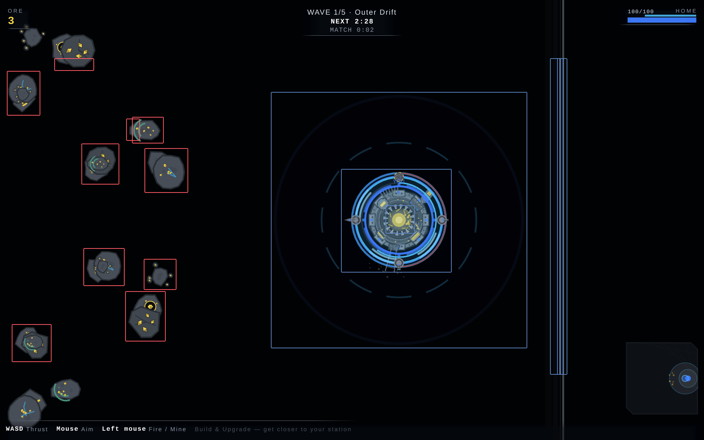

Served bundle dd1d3f5, the DEFAULT arena. MAP_NEBULA.octagon is none and the live
stage agrees: there is no void-nebula-* layer on the stage at all, and hiding that prefix changes
zero pixels. Both frames below have every void layer but void-ground hidden — no sky, not
one star, not one bloom halo. Everything still visible is a world object.

| # | bbox, CSS px | equiv. diameter | vs a bloom halo | mean ink |
|---|---|---|---|---|
| 1 | 77 × 79 | 74.2 | 3.9× | rgb(64, 70, 78) |
| 2 | 70.5 × 90.5 | 73.5 | 3.9× | rgb(56, 62, 69) |
| 3 | 72 × 65 | 65.6 | 3.5× | rgb(63, 68, 77) |
| 4 | 65 × 71.5 | 63.6 | 3.4× | rgb(59, 65, 73) |
| 5 | 56 × 79 | 62.7 | 3.3× | rgb(63, 68, 77) |
| 6 | 69 × 65 | 60.9 | 3.2× | rgb(59, 65, 72) |
| 7 | 52.5 × 42 | 44.1 | 2.3× | rgb(64, 70, 78) |
| 8 | 54.5 × 51 | 40.9 | 2.2× | rgb(56, 61, 69) |
| 9 | 69 × 13.5 | 27.5 | 1.5× | rgb(53, 59, 65) |
| 10 | 16 × 33 | 16.8 | 0.9× | rgb(51, 57, 64) |
The largest star in the field is the near layer at maxR 2.2, and its outer bloom halo
is 4.3× that — 18.9 px across at ~6% alpha
(BLOOM.intensity[1] = 0.065). The median object here is
62.7 px across — 3.3× the halo — and opaque
rather than a 6% wash. The ruling-out in the brief holds, and this is what is left.
Read this as a lead, not a verdict on the developer's screenshot. What is attested is what is in THIS frame: on the default arena, with no sky drawn and every star layer off, the empty field still contains 10 soft-edged neutral-grey discs several times the size of the largest bloom, and they are the rocks. That matches the report's shape — including "the stars that are supposed to be there are underneath", which is exactly true of an opaque rock. It is not proof that this is what they were looking at; nobody has matched their frame to a map, a build or a moment.